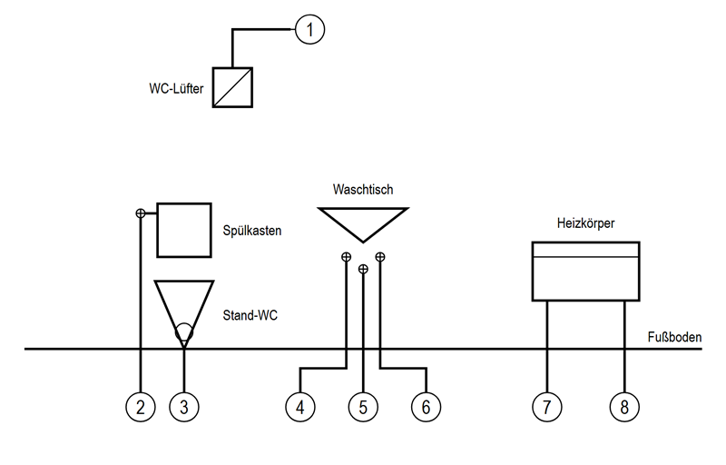
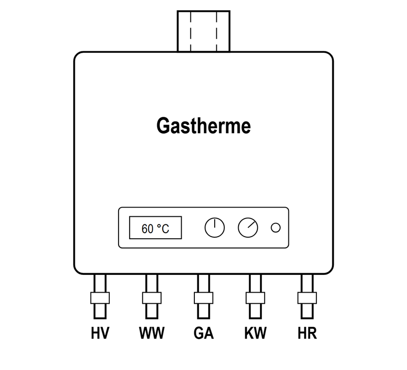

Leitungsarten und Kennzeichnung
Heute lernst du: Wofür man Rohrleitungen braucht und woran man sie erkennt.
So arbeitest du: Lies zuerst den grauen Infokasten. Mach dann die Aufgaben darunter. Die Antworten findest du im Infokasten.
Die Kästen mit Strichellinie heißen „Mehr wissen ★★★“: erweiterte Aufgabenstellungen.
Infokasten A: Wo gibt es Rohrleitungen? (Einsatzgebiete)
|
Der Installateur verlegt Rohrleitungen für 6 Einsatzgebiete (Bereiche, in denen man Leitungen braucht). |
| Einsatzgebiet | Was fließt? | Beispiel im Haus |
|---|---|---|
| Wasserversorgung | sauberes Trinkwasser | vom Wasserzähler zum Wasserhahn |
| Abwasserentsorgung | schmutziges Wasser | vom WC und Waschtisch zum Kanal |
| Heizungsinstallation | warmes Heizwasser | vom Kessel zum Heizkörper und zurück |
| Lüftungsanlagen | Luft | vom WC-Lüfter nach draußen |
| Gasinstallation | Gas | vom Gaszähler zum Gasherd oder zur Gastherme (Heizung mit Gas) |
| Druckluftanlagen | Luft mit Druck | vom Kompressor (Maschine, die Luft zusammendrückt) zu den Werkzeugen in der Werkstatt |
|
Merke: Ins Haus hinein kommen Trinkwasser und Gas. Aus dem Haus hinaus gehen Abwasser und Abluft. |
|
Mehr wissen ★★★ • Druckleitungen: Trinkwasser, Heizung, Gas und Druckluft stehen unter Druck. Darum kommt das Wasser auch in den 3. Stock hinauf. • Drucklose Leitungen: Das Abwasser hat keinen Druck. Es fließt nur durch das Gefälle (das Rohr liegt leicht schräg, z. B. 2 %). • Trinkwasser ist ein Lebensmittel. Darum gelten für Trinkwasserleitungen strenge Regeln. |
Aufgabe 1 ★ leicht
Lies Infokasten A. Zu welchem Einsatzgebiet gehört das Rohr? Schreib den Buchstaben ins Kästchen.
Achtung: Ein Buchstabe bleibt übrig.
|
|
Infokasten B: Was muss ein Rohr können? (Anforderungen an das Rohr)
|
Rohre haben besondere Anforderungen (das muss ein Rohr können): • Hygiene (Sauberkeit): Das Rohr ist innen glatt und schadstofffrei (es gibt keine Schadstoffe ins Wasser ab). So finden Bakterien weniger Halt. Warum ist das wichtig? Wir trinken das Wasser. Bakterien im Wasser machen krank. • Festigkeit: Das Rohr ist stabil. Druckleitungen (z. B. Wasser, Heizung, Gas) halten den Druck aus und gehen nicht kaputt. Warum ist das wichtig? Ein kaputtes Rohr macht einen Wasserschaden. Aus einem kaputten Gasrohr strömt Gas aus. |
|
Mehr wissen ★★★ • Biofilm: eine dünne, schleimige Schicht aus Bakterien an der Rohrwand. In einem glatten Rohr bildet er sich langsamer. • Stagnation (stehendes Wasser): Wird ein Wasserhahn lange nicht benutzt (z. B. im Urlaub), steht das Wasser im Rohr. Dann vermehren sich Bakterien. • Legionellen: Bakterien, die lauwarmes Wasser mögen (ca. 25 bis 45 °C). Atmet man sie beim Duschen ein, kann man schwer krank werden. • Druck in den Leitungen im Haus, ungefähr: Trinkwasser 3 bis 5 bar, Heizung (Fülldruck) 1,5 bis 3 bar, Abwasser 0 bar (kein Druck). |
Aufgabe 2a ★ leicht
Lies Infokasten B. Stimmt der Satz? Kreuze an: richtig (R) oder falsch (F).
| Satz | R | F |
|---|---|---|
| In einem glatten Rohr finden Bakterien weniger Halt. | ||
| Ein Trinkwasserrohr ist innen rau. | ||
| Ein Trinkwasserrohr darf Schadstoffe ins Wasser abgeben. | ||
| Eine Gasleitung ist eine Druckleitung. |
Infokasten B2: Was hält das Rohr aus? (Eigenschaften von Rohrwerkstoffen)
|
Auf der Baustelle muss ein Rohr viel aushalten. Rohre sind aus Metall (z. B. Stahl, Kupfer) oder aus Kunststoff. Jedes Material hat andere Eigenschaften (was das Material gut oder schlecht kann). |
| Eigenschaft | Was heißt das? |
|---|---|
| Festigkeit | Das Rohr hält Kräfte aus: Wasserdruck, Gewicht, einen Ziegel, der vom Dach fällt. |
| Temperaturbeständigkeit | Das Rohr hält Hitze und Kälte aus. |
| UV-Beständigkeit | Sonnenlicht (UV-Licht) macht das Rohr nicht spröde (hart und brüchig). |
| Korrosion | Das Rohr rostet. Das Material wird zerstört. |
| Diffusion | Luft kommt durch die Rohrwand ins Wasser. Die Luft lässt Teile in der Heizung rosten. Daraus wird Schlamm. |
| Wärmeausdehnung | Das Rohr wird länger, wenn es warm wird. |
|
• Metallrohre (Stahl, Kupfer): sehr fest. Sonnenlicht macht ihnen nichts. Aber: Sie können rosten (Korrosion). • Kunststoffrohre: Sie rosten nicht. Aber: Sie sind nicht so fest wie Metall. Sonnenlicht macht sie spröde. Darum Kunststoffrohre nicht in der Sonne lagern. Merke: Das Rohr muss zur Leitung passen. |
Aufgabe 2b ★ leicht
Lies Infokasten B2. Metall oder Kunststoff? Kreuze an.
| Satz | Metall | Kunststoff |
|---|---|---|
| Das Rohr rostet nicht. | ||
| Das Rohr ist sehr fest. | ||
| Sonnenlicht macht das Rohr spröde. | ||
| Das Rohr kann rosten. |
Aufgabe 2c ★★ mittel
Lies Infokasten B2. Was ist auf der Baustelle passiert? Schreib den Buchstaben ins Kästchen.
Achtung: Ein Buchstabe bleibt übrig.
|
|
|
Mehr wissen ★★★ • Punktkorrosion (Lochfraß): Sand oder Schmutz im Kupferrohr machen an einer Stelle ein Loch. Darum baut man in die Trinkwasserleitung einen Filter ein. • Bei manchen Kunststoffrohren kommt Luft durch die Rohrwand. Darum nimmt man für die Heizung ein diffusionsdichtes Rohr, z. B. das Mehrschichtverbundrohr mit einer Schicht aus Aluminium. • Wie viel länger ein Rohr wird, hängt ab vom Material, von der Länge des Rohrs und davon, wie viel wärmer es wird. |
Infokasten C: Jede Leitung hat eine Farbe (Kennzeichnung)
|
Man kennzeichnet (markiert) jedes Rohr mit einer Farbe und einer Abkürzung (kurzes Wort, z. B. KW). Das hat 2 Gründe: 1. Man hat einen besseren Überblick. 2. Man weiß sofort, welche Leitung welche ist. |
| Leitung | Farbe | Abkürzung | So merkst du es dir |
|---|---|---|---|
| Kaltwasser | grün | KW | Kalt-Wasser. Grün = frisch. |
| Warmwasser | orange | WW | Warm-Wasser. Orange = warm wie Feuer. |
| Zirkulation | violett | Z | Z wie „zurück im Kreis“. |
| Abwasser (Schmutzwasser) | braun | SW | Schmutz-Wasser. Braun = schmutzig. |
| Vorlauf (Heizung) | rot | VL | Vor-Lauf. Rot = heiß. |
| Rücklauf (Heizung) | blau | RL | Rück-Lauf. Blau = kühler. |
| Abluft | olivgrün | AL | Ab-Luft. Die Luft geht aus dem Raum nach draußen. |
| Gas | gelb | G | Gas. Gelb = Achtung, Gefahr! |
|
Merke: Wir verwenden die Farben in dieser Tabelle. • Im Fachkundebuch ist Abwasser olivgrün und Abluft gelb. Hat ein Plan andere Farben, steht darauf immer eine Farblegende (eine Liste: welche Farbe ist welche Leitung). • Vorlauf = Heizwasser fließt zum Heizkörper (heiß). Rücklauf = Heizwasser fließt zurück zum Kessel (abgekühlt). • Zirkulation = Warmwasser fließt im Kreis zurück zum Speicher (Behälter für warmes Wasser). So kommt am Wasserhahn sofort warmes Wasser. |
|
Wo ist welche Leitung? • Waschtisch (von vorne gesehen): Warmwasser links, Kaltwasser rechts, Abwasser in der Mitte. • WC: Der Spülkasten bekommt Kaltwasser. Vom WC weg geht das Abwasser. • Heizkörper: Er hat einen Vorlauf und einen Rücklauf. |
|
Mehr wissen ★★★ • RAL-Nummer: Jede Farbe hat eine genormte Nummer. So nimmt jede Firma genau dieselbe Farbe. Laut Fachkundebuch: Kaltwasser RAL 6001, Warmwasser RAL 2008, Zirkulation RAL 4005, Vorlauf RAL 3002, Rücklauf RAL 5013, Gas RAL 1012. • Leitungen im Plan: Neben der Linie stehen Abkürzung und Größe. Ein Pfeil zeigt die Fließrichtung. – VL 22x1 = Vorlauf, Rohr 22 mm außen, 1 mm Wand – SW DN50 mit 2 % = Schmutzwasser, Nennweite (Größe) 50, Gefälle 2 % 22x1 ist ein genaues Maß in mm (außen x Wand). DN 50 ist nur eine ungefähre Größe des Rohrs, kein genaues Maß. – G 25 = Gasleitung |
Aufgabe 3 ★ leicht
Schau nicht in Infokasten C. Schreib die Abkürzung und die Farbe in die Tabelle.
Diese Farben gibt es: blau – gelb – olivgrün – schwarz – grün – rot – violett – orange – braun
Achtung: Eine Farbe bleibt übrig.
| Leitung | Abkürzung | Farbe |
|---|---|---|
| Gas | ||
| Warmwasser | ||
| Rücklauf (Heizung) | ||
| Kaltwasser | ||
| Abluft | ||
| Abwasser | ||
| Zirkulation | ||
| Vorlauf (Heizung) |
Kontrolliere dann mit Infokasten C.
Aufgabe 4 ★★ mittel
Das Bild zeigt eine Wand im Bad. Die Leitungen haben die Nummern 1 bis 8.
a) Welche Leitung ist es? Schreib die Abkürzung unter die Nummer.
Tipps:
• Nummer 1: Ein WC-Lüfter saugt die Luft aus dem WC und bläst sie nach draußen. Wie heißt diese Luft?
• Nummer 2 bis 6: Lies in Infokasten C „Wo ist welche Leitung?“
• Nummer 7 und 8: Der Vorlauf kommt links im Bild an.

| Nummer | 1 | 2 | 3 | 4 | 5 | 6 | 7 | 8 |
|---|---|---|---|---|---|---|---|---|
| Abkürzung |
Aufgabe 5 ★★ mittel
Auf einer Baustelle sind alle Rohre grau und ohne Abkürzung. Dein Kollege soll die Warmwasserleitung absperren. Er weiß nicht, welches Rohr es ist.
Warum kennzeichnet man Rohre? Schreib 2 Gründe auf.
Tipp: Lies Infokasten C.
| 1. | |
| 2. |
Infokasten D: Leitungen ohne Farbe erkennen
|
Manchmal sind Rohre nicht gekennzeichnet. Dann hilft dir: Wie warm ist das Rohr? Wohin fließt es? |
| Leitung | Temperatur, ungefähr | Woher und wohin? |
|---|---|---|
| Kaltwasser KW | 10 bis 15 °C | kommt vom Wasserzähler |
| Warmwasser WW | ca. 60 °C | vom Warmwasserspeicher zu den Wasserhähnen |
| Zirkulation Z | ca. 55 °C | von den Wasserhähnen zurück zum Speicher |
| Vorlauf VL | heiß, z. B. 70 °C | vom Kessel zu den Heizkörpern |
| Rücklauf RL | kühler, z. B. 50 °C | von den Heizkörpern zurück zum Kessel |
| Abwasser SW | kein Druck | schmutziges Wasser fließt im Gefälle (das Rohr liegt schräg) zum Kanal |
|
Mehr wissen ★★★ • Warum ist Warmwasser so heiß? Legionellen (Bakterien, die lauwarmes Wasser mögen) sterben bei hoher Temperatur. Darum hat das Warmwasser im Speicher ca. 60 °C. Die Zirkulation kommt mit ca. 55 °C zurück. • Warum ist der Rücklauf kühler? Der Heizkörper gibt Wärme an den Raum ab. Darum ist das Wasser danach kühler. • An der Gastherme gibt es noch das SIV = Sicherheitsventil. Es öffnet, wenn der Druck in der Heizung zu hoch wird, meist bei 3 bar. • Wie heiß Vorlauf und Rücklauf sind, hängt von der Anlage ab: alte Heizkörper z. B. Vorlauf 70 °C, Rücklauf 50 °C. Fußbodenheizung z. B. Vorlauf 35 °C, Rücklauf 28 °C. • Kaltwasser soll unter 25 °C bleiben (ÖNORM B 1921). Sonst vermehren sich Bakterien. |
Aufgabe 6 ★★ mittel
Unten an einer Gastherme sind 5 Anschlüsse.
Welche Leitung kommt an den Anschluss? Schreib den Buchstaben ins Kästchen.
Achtung: Ein Buchstabe bleibt übrig. Tipp: Lies Infokasten D.

|
|
|
An Geräten verwenden die Hersteller oft eigene Abkürzungen. Bei einer Gastherme (Heizung mit Gas) z. B.: HV = Heizungsvorlauf, HR = Heizungsrücklauf, GA = Gasanschluss. |
Aufgabe 7 ★★ mittel
Im Technikraum sind alle Rohre grau. Es gibt keine Abkürzungen. Du hast die Rohre gemessen und angeschaut.
a) Welche Leitung ist es? Schreib die Abkürzung in die Tabelle.
Tipp: Lies Infokasten D.
| Rohr | Was du gemessen und gesehen hast | Abkürzung |
|---|---|---|
| A | 60 °C. Fließt vom Warmwasserspeicher weg zu den Wasserhähnen. | |
| B | 55 °C. Fließt von den Wasserhähnen zurück zum Speicher. | |
| C | 12 °C. Kommt vom Wasserzähler. | |
| D | 70 °C. Fließt vom Kessel zu den Heizkörpern. | |
| E | 50 °C. Fließt von den Heizkörpern zurück zum Kessel. | |
| F | Kein Druck. Schmutziges Wasser fließt zum Kanal. |
b) Dein Chef will das ganze Warmwasser (zum Duschen und Waschen) absperren. Welche 2 Rohre gehören dazu? Kreuze an.
| A | B | C | D | E | F |
c) Eine andere Firma streicht das Abwasser olivgrün (wie im Fachkundebuch). Was muss dann auf dem Plan stehen? Kreuze an.
| eine Farblegende | nichts, das passt so | die Farben aus dem Buch |
Aufgabe 9 ★★ mittel – Fachbegriffe
Fachbegriffe sind die Wörter, die man auf der Baustelle verwendet.
Steht der Fachbegriff da? Dann erkläre ihn mit eigenen Worten.
Steht die Erklärung da? Dann schreib den Fachbegriff dazu.
Diese Fachbegriffe gibt es: Korrosion – Gefälle – Vorlauf – Farblegende – Wärmeausdehnung – Kondensat – Zirkulation
Achtung: 2 Wörter bleiben übrig. Tipp: Lies die Infokästen B, B2 und C.
| Fachbegriff | Erklärung |
|---|---|
| Hygiene | |
| Das Rohr rostet. Das Material wird zerstört. | |
| Festigkeit | |
| Das Rohr wird länger, wenn es warm wird. | |
| Diffusion | |
| Heizwasser fließt vom Kessel zum Heizkörper. | |
| Rücklauf | |
| Warmwasser fließt im Kreis zurück zum Speicher. | |
| Kennzeichnung | |
| Liste auf dem Plan: Welche Farbe ist welche Leitung? |
Aufgabe 10 ★★★ schwer – Fachbegriffe auf Englisch
Wie heißt der Fachbegriff auf Englisch? Schreib das englische Wort in die Tabelle.
Diese Wörter gibt es: pipe – tap – cold water – return – radiator – hot water – gas – valve – waste water – exhaust air – corrosion – flow
Achtung: 2 Wörter bleiben übrig.
| Deutsch | Englisch | Deutsch | Englisch |
|---|---|---|---|
| Rohr | Vorlauf | ||
| Kaltwasser | Rücklauf | ||
| Warmwasser | Abluft | ||
| Abwasser | Heizkörper | ||
| Gas | Korrosion |
Fertig? Tippe bei jeder Aufgabe auf „Prüfen“. Bessere deine Fehler aus.